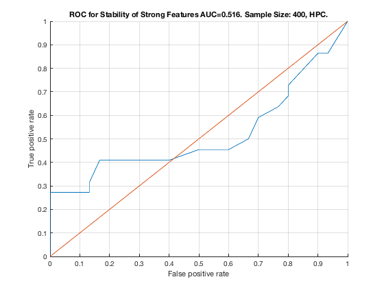

TieNet. Sample Size: 400. HPC.
unit_stability_type(400, 1, "TieNet")
Table 6. Stability by Type. Sample Size: 400, HPC.
___________________________________________________
SELECTED COUNTS: Strong=22, Weak=26, Irrelevant=4
TOTAL COUNTS: Strong=23, Weak=26, Irrelevant=4
Feature_Number Stability Type Path_Length N_MBS Equivalence
______________ _________ ____________ ___________ _____ ___________
23 ' 0.486 ' ' STRONG ' 3 0 21
22 ' 0.278 ' ' STRONG ' 2 0 21
20 ' 0.164 ' ' STRONG ' 3 0 18
21 ' 0.156 ' ' STRONG ' 1 0 21
19 ' 0.092 ' ' STRONG ' 2 0 18
18 ' 0.072 ' ' STRONG ' 1 0 18
29 ' 0.050 ' ' weak ' 11 0 29
25 ' 0.046 ' ' weak ' 6 0 25
39 ' 0.042 ' ' weak ' 4 0 39
42 ' 0.042 ' 'irrelevant' Inf 0 42
4 ' 0.040 ' ' STRONG ' 4 0 1
6 ' 0.038 ' ' STRONG ' 3 0 1
11 ' 0.038 ' ' STRONG ' 4 0 7
30 ' 0.038 ' ' weak ' 10 0 30
50 ' 0.032 ' ' weak ' 5 0 50
33 ' 0.030 ' ' weak ' 8 0 33
38 ' 0.028 ' ' weak ' 5 0 38
40 ' 0.028 ' ' weak ' 3 0 40
45 ' 0.028 ' ' weak ' 7 0 45
51 ' 0.026 ' ' weak ' 4 0 51
28 ' 0.024 ' ' weak ' 5 0 28
10 ' 0.022 ' ' STRONG ' 4 0 7
24 ' 0.022 ' ' weak ' 4 0 24
37 ' 0.022 ' ' weak ' 6 0 37
44 ' 0.022 ' 'irrelevant' Inf 0 44
35 ' 0.020 ' ' weak ' 7 0 35
36 ' 0.020 ' ' weak ' 8 0 36
46 ' 0.020 ' ' weak ' 7 0 46
3 ' 0.018 ' ' STRONG ' 4 0 1
27 ' 0.018 ' ' weak ' 6 0 27
49 ' 0.018 ' ' weak ' 6 0 49
2 ' 0.016 ' ' STRONG ' 2 0 1
17 ' 0.016 ' ' STRONG ' 4 72 12
52 ' 0.016 ' ' weak ' 4 72 52
5 ' 0.014 ' ' STRONG ' 3 90 1
32 ' 0.014 ' ' weak ' 8 90 32
53 ' 0.014 ' ' weak ' 5 90 53
16 ' 0.012 ' ' STRONG ' 2 180 12
43 ' 0.012 ' 'irrelevant' Inf 180 43
8 ' 0.010 ' ' STRONG ' 2 270 7
7 ' 0.008 ' ' STRONG ' 1 360 7
34 ' 0.008 ' ' weak ' 8 360 34
9 ' 0.006 ' ' STRONG ' 3 450 7
14 ' 0.006 ' ' STRONG ' 3 675 12
41 ' 0.006 ' ' weak ' 3 675 41
48 ' 0.006 ' ' weak ' 6 675 48
47 ' 0.004 ' 'irrelevant' Inf 675 47
12 ' 0.002 ' ' STRONG ' 1 900 12
13 ' 0.002 ' ' STRONG ' 2 1125 12
15 ' 0.002 ' ' STRONG ' 3 1350 12
26 ' 0.002 ' ' weak ' 5 1350 26
31 ' 0.002 ' ' weak ' 9 1350 31
Figure 6. ROC for Stability of Strong Features AUC=0.516. Sample Size: 400, HPC.
_________________________________________________________________________________
